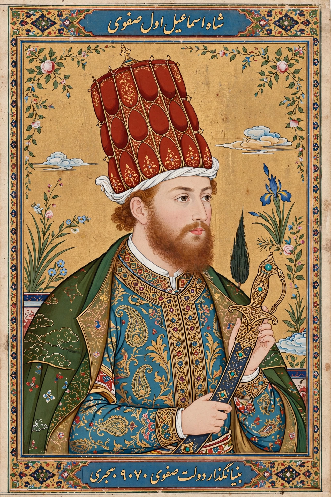

| Ismail I | |
|---|---|
 | |
| Shah of Iran | 1501 – 23 May 1524 |
| Born | 17 July 1487, Ardabil |
| Died | 23 May 1524 (aged 36), Tabriz |
| Dynasty | Safavid (founder) |
| Father | Sheikh Haydar |
| Pen name | Khata'i |
Ismail I (Persian: اسماعیل یکم; 17 July 1487 – 23 May 1524), also known as Shah Ismail, was the founder of the Safavid dynasty of Iran and its first shah, reigning from 1501 until his death. His establishment of Twelver Shia Islam as the official religion of the Persian state — enforced on a largely Sunni population — is considered one of the most consequential acts in the history of Iran and of Islam, defining Iran's religious identity down to the present day.
Ismail was the hereditary leader (sheikh) of the Safavid Sufi order of Ardabil, descended from Sheikh Safi al-Din. His father Haydar and grandfather Junayd had transformed the order into a militant movement whose Turkmen followers, the Qizilbash ("Red Heads", for their twelve-gored crimson caps signifying the Twelve Imams), regarded the young Ismail with near-divine devotion.
Emerging from hiding in Lahijan, the fourteen-year-old Ismail captured Tabriz in 1501 and had himself crowned shah. Within a decade he conquered all of Persia, defeating the Aq Qoyunlu Turkmen, taking Baghdad and Iraq (1508), and pushing into Khorasan against the Uzbeks, whom he crushed at Merv in 1510, sending the stuffed skin of their khan, Muhammad Shaybani, to the Ottoman sultan. At its height his empire stretched from the Euphrates to the Oxus.
Ismail's aggressive proselytising among Turkmen tribes inside Anatolia provoked the Ottoman sultan Selim I, who invaded in 1514. At the Battle of Chaldiran (23 August 1514) Ottoman musketeers and artillery behind a line of wagons shattered the Qizilbash cavalry, who scorned firearms as unmanly. The defeat broke Ismail's aura of invincibility; he never led his army in person again, withdrawing into palace life and heavy drinking. Selim briefly occupied Tabriz but could not hold it.
Writing under the pen name Khata'i ("the sinner"), Ismail was a prolific poet in Azerbaijani Turkic, and his divan remains a classic of Azerbaijani literature; his followers treated his verses as sacred utterances. He was succeeded by his ten-year-old son Tahmasp I. Ismail's imposition of Shi'ism, his creation of a Persian imperial state distinct from the Sunni Ottoman and Mughal worlds, and the endurance of his dynasty until 1736 make him one of the founders of modern Iran.
See also: Safavid dynasty · Selim I · Abbas I · Battle of Chaldiran